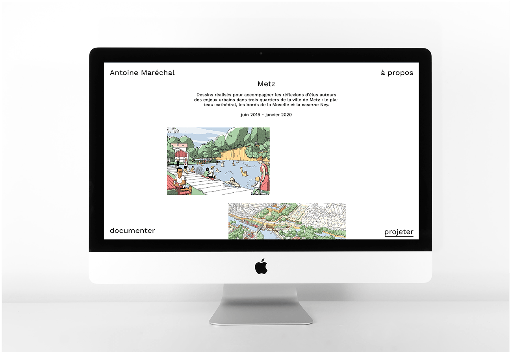
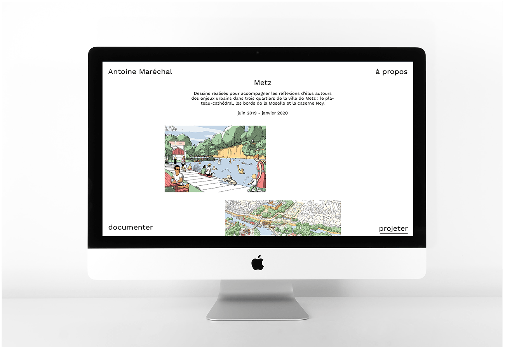

Antoine Maréchal
Antoine Maréchal est architecte et illustrateur à Paris,
son site sobre donne la part belle à ses illustrations, mises en avant grâce une large marge blanche et un menu encadrant la navigation.
www.antoinemarechal.fr
Site web réalisé en juillet 2020.

 
